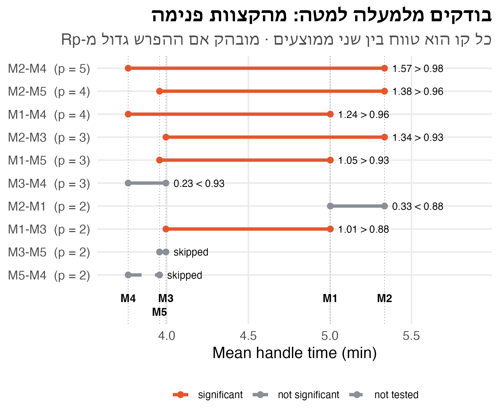
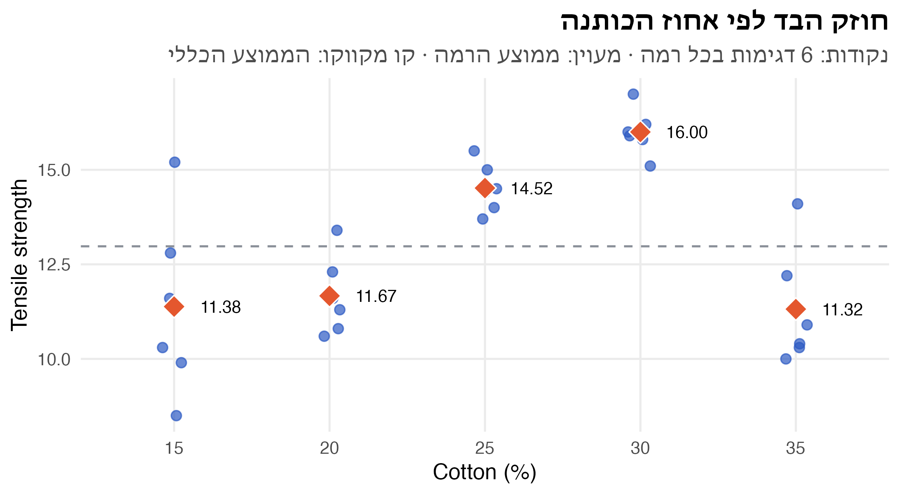
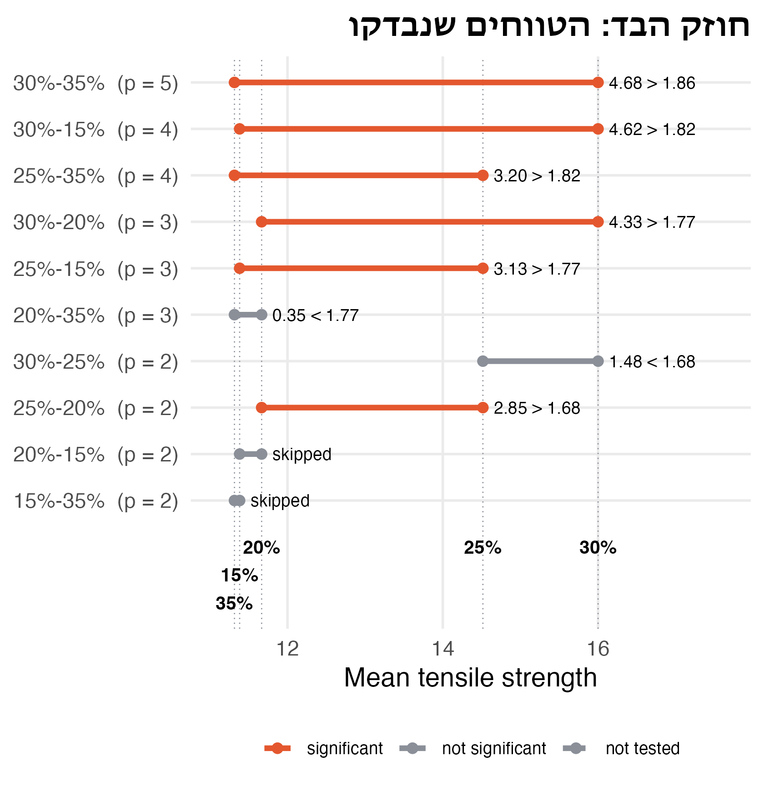
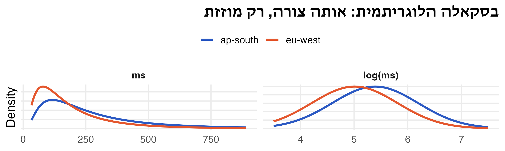
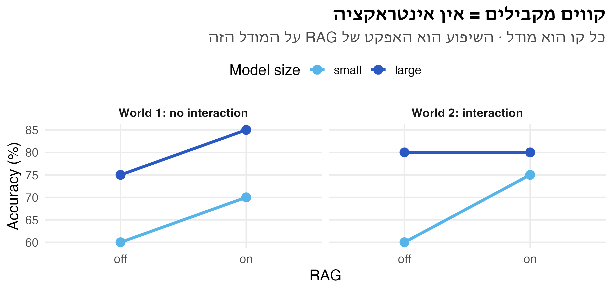
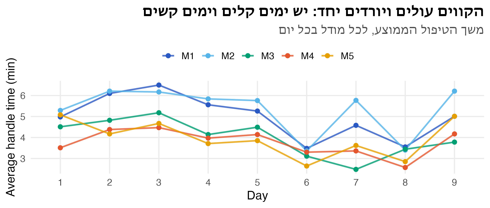

summary(fit_ai) Df Sum Sq Mean Sq F value Pr(>F)
model 4 18.0 4.51 5.28 0.0016 **
Residuals 40 34.1 0.85
---
Signif. codes: 0 '***' 0.001 '**' 0.01 '*' 0.05 '.' 0.1 ' ' 1ניתוח נתונים סטטיסטי · הרצאה 6
2026-11-20
המודל: \(a\) רמות, \(n\) תצפיות בכל רמה, \(N = an\)
\[ y_{ij} = \mu + \tau_i + \varepsilon_{ij}, \qquad \sum_{i=1}^{a}\tau_i = 0, \qquad \varepsilon_{ij} \sim N(0, \sigma^2) \text{ בלתי תלויים} \]
\(H_0: \tau_1 = \dots = \tau_a = 0\) מול \(H_1\): לפחות \(\tau_i \neq 0\) אחד
פירוק סכום הריבועים:
\[ \underbrace{\sum_{i=1}^{a}\sum_{j=1}^{n}(y_{ij} - \bar y_{\cdot\cdot})^2}_{SS_T\ (SS_y),\ N-1} = \underbrace{n\sum_{i=1}^{a}(\bar y_{i\cdot} - \bar y_{\cdot\cdot})^2}_{SS_{Tr},\ a-1} + \underbrace{\sum_{i=1}^{a}\sum_{j=1}^{n}(y_{ij} - \bar y_{i\cdot})^2}_{SS_E,\ N-a} \]
5 מודלים (M1, M2 קטנים, M3 בינוני, M4, M5 גדולים), 9 ימים לכל מודל. התגובה: משך הטיפול הממוצע בפנייה (דקות).
Df Sum Sq Mean Sq F value Pr(>F)
model 4 18.0 4.51 5.28 0.0016 **
Residuals 40 34.1 0.85
---
Signif. codes: 0 '***' 0.001 '**' 0.01 '*' 0.05 '.' 0.1 ' ' 1עם 5 רמות יש \(\binom{5}{2} = 10\) זוגות. 10 מבחני t ב-\(\alpha = 0.05\), כשאין שום הבדל:
| שיעור הטעות לכל השוואה | \(\alpha = 0.05\) |
| שיעור הטעות למשפחה (FWER): \(P(\text{לפחות טעות אחת})\) | עד \(1 - 0.95^{10} = 0.40\). בסימולציה: 27% |
\[ s_{\bar y} = \sqrt{\frac{MS_E}{n}} = \sqrt{\frac{0.854}{9}} = 0.308 \]
| השיטה | הסף | FWER |
|---|---|---|
| Duncan | \(R_p = r_\alpha(p, f)\, s_{\bar y}\), תלוי במרחק \(p\) בדירוג | גבוה מ-\(\alpha\) |
| Tukey HSD | \(q_\alpha(a, f)\, s_{\bar y}\), סף אחד לכל הזוגות | בדיוק \(\alpha\) |
Duncan’s multiple range test משווה את כל הזוגות, אחרי שמבחן ה-F דחה. החידוש: לא כל הזוגות מקבלים אותו סף.
ניסוי מחשבתי: אין שום הבדל בין 5 המודלים. ממיינים את 5 הממוצעים:
\(p\) = כמה ממוצעים נמצאים בטווח בין שני הממוצעים שמשווים, כולל שניהם.
| דירוג | 1 | 2 | 3 | 4 | 5 |
|---|---|---|---|---|---|
| מודל | M2 | M1 | M3 | M5 | M4 |
| ממוצע | 5.33 | 5.00 | 3.99 | 3.96 | 3.76 |
| הזוג | M2, M1 | M2, M3 | M1, M4 | M2, M4 |
|---|---|---|---|---|
| הממוצעים בטווח | M2, M1 | M2, M1, M3 | M1, M3, M5, M4 | כל החמישה |
| \(p\) | 2 (שכנים) | 3 | 4 | 5 (הקצוות) |
\[ R_p = r_\alpha(p, f)\cdot s_{\bar y} \qquad s_{\bar y} = \sqrt{\frac{MS_E}{n}} \qquad f = N - a \]
בבחינה מקבלים טבלה. שורה לפי \(f\), דרגות החופש של \(MS_E\). עמודה לפי \(p\):
| f | p = 2 | p = 3 | p = 4 | p = 5 | p = 6 |
|---|---|---|---|---|---|
| 10 | 3.15 | 3.29 | 3.38 | 3.43 | 3.47 |
| 20 | 2.95 | 3.10 | 3.19 | 3.25 | 3.30 |
| 25 | 2.91 | 3.06 | 3.15 | 3.22 | 3.27 |
| 30 | 2.89 | 3.04 | 3.13 | 3.20 | 3.25 |
| 40 | 2.86 | 3.01 | 3.10 | 3.17 | 3.22 |
| 60 | 2.83 | 2.98 | 3.07 | 3.14 | 3.20 |
נקודת המוצא (מהניסוי המחשבתי): גם בלי שום אפקט, ככל שיש יותר ממוצעים בטווח, הפער בין הקצוות גדול יותר. לכן הסף חייב לגדול עם \(p\).
השאלה הפתוחה: כמה סיכון לאזעקת שווא מרשים בכל טווח? יש שתי תשובות אפשריות:
גישה מחמירה: 5% לכל ההשוואות יחד
Duncan: 5% לכל צעד
| \(p\) | 2 | 3 | 4 | 5 |
|---|---|---|---|---|
| הסיכון ב-Duncan | 5% | 10% | 14% | 19% |
| הסף ב-Duncan | 2.86 | 3.01 | 3.10 | 3.17 |
| הסף בגישה המחמירה | 4.04 | 4.04 | 4.04 | 4.04 |
הסיכון: \(1 - 0.95^{p-1}\). הספים: מקדמים עבור \(f = 40\), כמו במוקד השירות.
בשורה אחת: Duncan נותן 5% לכל צעד, והצעדים מצטברים. לכן הסף שלו נמוך יותר מזה של הגישה המחמירה, והוא מוצא יותר הבדלים.
ההתפלגות: studentized range. הטווח של \(p\) ממוצעים, מחולק בשגיאת התקן, כש-\(H_0\) נכונה:
\[ q_{p,\,f} = \frac{\bar y_{max} - \bar y_{min}}{s_{\bar y}}, \qquad s_{\bar y} = \sqrt{\frac{MS_E}{n}} \]
רמת המובהקות: לטווח של \(p\) ממוצעים, Duncan משתמש ב-\(\alpha_p\), ו-\(r_\alpha(p, f)\) הוא האחוזון המתאים של \(q_{p,\,f}\):
\[ \alpha_p = 1 - (1 - \alpha)^{p - 1} \qquad\Longrightarrow\qquad r_\alpha(p, f) = q_{p,\,f}\big[(1 - \alpha)^{p - 1}\big] \]
qtukey(prob, nmeans = p, df = f) [,1] [,2] [,3] [,4]
p 2.000 3.000 4.000 5.000
alpha_p 0.050 0.098 0.143 0.185
r 2.858 3.005 3.102 3.171
R_p 0.880 0.926 0.955 0.977| שלב | הזוג | \(p\) | ההפרש | \(R_p\) | החלטה |
|---|---|---|---|---|---|
| 1 | M2–M4 | 5 | 1.57 | 0.98 | מובהק |
| 2 | M2–M5 | 4 | 1.38 | 0.96 | מובהק |
| M1–M4 | 4 | 1.24 | 0.96 | מובהק | |
| 3 | M2–M3 | 3 | 1.34 | 0.93 | מובהק |
| M1–M5 | 3 | 1.05 | 0.93 | מובהק | |
| M3–M4 | 3 | 0.23 | 0.93 | לא מובהק | |
| 4 | M2–M1 | 2 | 0.33 | 0.88 | לא מובהק |
| M1–M3 | 2 | 1.01 | 0.88 | מובהק | |
| M3–M5 | 2 | לא נבדק* | |||
| M5–M4 | 2 | לא נבדק* |
* כלל ההגנה: שניהם בתוך הטווח M3–M4, שלא היה מובהק

| M2 | M1 | M3 | M5 | M4 | |
|---|---|---|---|---|---|
| ממוצע | 5.33 | 5.00 | 3.99 | 3.96 | 3.76 |
| קבוצה | א | א | ב | ב | ב |
ההמלצה: להפעיל את אחד מ-M3, M4 או M5. משך הטיפול לא מבדיל ביניהם, ולכן הבחירה תלויה בשיקולים אחרים, למשל עלות: M3 הוא המודל הבינוני, M4 ו-M5 הגדולים והיקרים.
מפעל טקסטיל בודק איזה אחוז כותנה בבד נותן את החוזק הגבוה ביותר. 5 רמות (15%–35%), 6 דגימות בכל רמה. התגובה: חוזק מתיחה.

מפעל טקסטיל בודק 5 רמות של אחוז כותנה בבד, 6 דגימות בכל רמה. התגובה: חוזק מתיחה. ה-F מובהק. אילו רמות שונות זו מזו?
Df Sum Sq Mean Sq F value Pr(>F)
cotton_pct 4 111.1 27.8 13.9 4.3e-06 ***
Residuals 25 50.1 2.0
---
Signif. codes: 0 '***' 0.001 '**' 0.01 '*' 0.05 '.' 0.1 ' ' 1 30 25 20 15 35
16.00 14.52 11.67 11.38 11.32 השלימו: \(s_{\bar y}\), \(R_2, \dots, R_5\), כל השלבים, והחלוקה לקבוצות.
רמז: לא צריך את הנתונים הגולמיים. כל מה שצריך נמצא בפלט: \(MS_E\) ו-\(f\) בשורת Residuals, \(n = 6\) מהתיאור, והממוצעים בשורה האחרונה.
Mean Sq בשורת Residuals: \(MS_E = 2\). זה האומד של \(\sigma^2\), ולכן לא צריך את התצפיות עצמןDf באותה שורה: \(f = N - a = 30 - 5 = 25\)| הרמה | 30% | 25% | 20% | 15% | 35% |
|---|---|---|---|---|---|
| הממוצע | 16.00 | 14.52 | 11.67 | 11.38 | 11.32 |
| המיקום | 1 | 2 | 3 | 4 | 5 |

| 30% | 25% | 20% | 15% | 35% | |
|---|---|---|---|---|---|
| הממוצע | 16.00 | 14.52 | 11.67 | 11.38 | 11.32 |
| הקבוצה | א | א | ב | ב | ב |
Tukey’s Honest Significant Difference: סף אחד לכל הזוגות, שמבטיח FWER \(= \alpha\) בדיוק (בניסוי מאוזן).
\[ HSD = q_\alpha(a, f)\cdot\sqrt{\frac{MS_E}{n}} \]
רווחי סמך משותפים לכל ההפרשים: \((\bar y_{i\cdot} - \bar y_{k\cdot}) \pm HSD\). בניסוי לא מאוזן (Tukey–Kramer): \(q_\alpha(a, f)\sqrt{\frac{MS_E}{2}\left(\frac{1}{n_i} + \frac{1}{n_k}\right)}\).
\[ HSD = q_{0.05}(5, 40)\cdot 0.308 = 4.04 \cdot 0.308 = 1.244 \]
q HSD
4.039 1.244 # A tibble: 10 × 5
high low diff duncan tukey
<chr> <chr> <dbl> <lgl> <lgl>
1 M2 M4 1.57 TRUE TRUE
2 M2 M5 1.38 TRUE TRUE
3 M1 M4 1.24 TRUE FALSE
4 M2 M3 1.34 TRUE TRUE
5 M1 M5 1.05 TRUE FALSE
6 M3 M4 0.231 FALSE FALSE
7 M2 M1 0.332 FALSE FALSE
8 M1 M3 1.01 TRUE FALSE
9 M3 M5 0.0389 FALSE FALSE
10 M5 M4 0.192 FALSE FALSE Tukey multiple comparisons of means
95% family-wise confidence level
Fit: aov(formula = aht ~ model, data = calls)
$model
diff lwr upr p adj
M2-M1 0.33222 -0.9117 1.576159 0.9397
M3-M1 -1.00778 -2.2517 0.236159 0.1617
M4-M1 -1.23889 -2.4828 0.005048 0.0514
M5-M1 -1.04667 -2.2906 0.197270 0.1354
M3-M2 -1.34000 -2.5839 -0.096063 0.0292
M4-M2 -1.57111 -2.8150 -0.327174 0.0072
M5-M2 -1.37889 -2.6228 -0.134952 0.0233
M4-M3 -0.23111 -1.4750 1.012826 0.9836
M5-M3 -0.03889 -1.2828 1.205048 1.0000
M5-M4 0.19222 -1.0517 1.436159 0.9918diff: ההפרש בין הממוצעים (השורה \(-\) העמודה). M2-M1 = 0.33: עם M2 הטיפול ארוך מאשר עם M1 ב-0.33 דקותlwr, upr: רווח סמך משותף של 95%: \(\text{diff} \pm 1.244\). ב-95% מהניסויים כל עשרת הרווחים יכילו את ההפרש האמיתי יחדp adj: p-value מתוקן להשוואות מרובות. מובהק אם קטן מ-0.05, כלומר אם הרווח לא כולל את 0M4-M1: ההפרש 1.239, וה-HSD הוא 1.244. p adj = 0.051. לא מובהק, בהפרש של חמש אלפיות דקהTukeyHSD(fit_ai)$model |>
as_tibble(rownames = "pair") |>
mutate(pair = fct_reorder(pair, diff), significant = `p adj` < 0.05) |>
ggplot(aes(diff, pair, colour = significant)) +
geom_vline(xintercept = 0, colour = nanas_pal[["grey"]]) +
geom_errorbar(aes(xmin = lwr, xmax = upr), width = 0.25, linewidth = 1, orientation = "y") +
geom_point(size = 3) +
scale_colour_manual(values = c(`TRUE` = nanas_pal[["accent"]], `FALSE` = nanas_pal[["grey"]]),
labels = c(`TRUE` = "מובהק", `FALSE` = "לא מובהק")) +
labs(title = "שלושה זוגות מובהקים לפי Tukey: M2 מול M3, M4 ו-M5",
subtitle = "רווחי סמך משותפים 95% להפרשים · רווח שלא חוצה את 0 הוא מובהק",
x = "Difference in mean handle time (min)", y = NULL, colour = NULL)
| זוג | הפרש | Duncan (\(R_p\)) | Tukey (1.244) |
|---|---|---|---|
| M2–M4 | 1.57 | ✓ (0.98) | ✓ |
| M2–M5 | 1.38 | ✓ (0.96) | ✓ |
| M2–M3 | 1.34 | ✓ (0.93) | ✓ |
| M1–M4 | 1.24 | ✓ (0.96) | ✗ |
| M1–M5 | 1.05 | ✓ (0.93) | ✗ |
| M1–M3 | 1.01 | ✓ (0.88) | ✗ |
| M2–M1, M3–M4, M3–M5, M5–M4 | ≤ 0.33 | ✗ | ✗ |
| המצב | השיטה | ב-R |
|---|---|---|
| מעט שאלות, מתוכננות מראש | ניגודים, \(\alpha\) רגילה | ידני, pf() |
| כל הזוגות, אחרי F מובהק | Tukey HSD | TukeyHSD() |
| כל הזוגות, כשהבחינה דורשת | Duncan | qtukey() + טבלה |
הכלל החשוב ביותר: מחליטים על השיטה לפני שמסתכלים על התוצאות. אם בוחרים את השיטה שנותנת את התוצאה ה”נכונה”, כל התיקון לא שווה כלום.
הדוגמה: זמן התגובה של API בארבעה אזורי ענן (regions), 12 בקשות מכל אזור. זמני תגובה מוטים ימינה, עם ערכים חריגים.
set.seed(162)
latency <- tibble(region = factor(rep(c("eu-west", "us-east", "il-central", "ap-south"), each = 12),
levels = c("eu-west", "us-east", "il-central", "ap-south")),
ms = round(rlnorm(48, log(rep(c(150, 155, 210, 220), each = 12)), 0.8)))
ggplot(latency, aes(ms, region)) +
geom_boxplot(width = 0.5, outlier.shape = NA, colour = "grey60") +
geom_point(colour = nanas_pal[["primary"]], size = 2.5, alpha = 0.7,
position = position_jitter(height = 0.1, seed = 3)) +
labs(title = "זמני תגובה מוטים, עם כמה בקשות איטיות מאוד",
subtitle = "12 בקשות מכל אזור",
x = "Latency (ms)", y = NULL)
Df Sum Sq Mean Sq F value Pr(>F)
region 3 292464 97488 2.35 0.085 .
Residuals 44 1823008 41432
---
Signif. codes: 0 '***' 0.001 '**' 0.01 '*' 0.05 '.' 0.1 ' ' 1
Exact one-sample Kolmogorov-Smirnov test
data: rstandard(fit_lat)
D = 0.21, p-value = 0.02
alternative hypothesis: two-sidedtibble(r = sort(rstandard(fit_lat))) |>
mutate(z = qnorm((row_number() - 0.5) / n())) |>
ggplot(aes(z, r)) +
geom_abline(intercept = 0, slope = 1, colour = nanas_pal[["grey"]], linetype = "dashed") +
geom_point(colour = nanas_pal[["primary"]], size = 2.5) +
labs(title = "הזנב הימני ארוך מדי: כמה בקשות איטיות מאוד",
subtitle = "שאריות מתוקננות · קו מקווקו: N(0,1)",
x = "Theoretical quantile (z)", y = "Standardised residual")הכללה של מבחן סכום הדירוגים (הרצאה 1) ליותר משני מדגמים.
\[ y_{ij} = \mu + \tau_i + \varepsilon_{ij} \]
תחת \(H_0\) הדרגות מתפזרות באקראי בין הרמות. כמו במבחן סכום הדירוגים, כל דרגה מתפלגת אחיד על \(\{1, \dots, N\}\):
\[ E(R_{ij}) = \frac{N+1}{2} \qquad V(R_{ij}) = \frac{N^2 - 1}{12} \]
ב-ANOVA (בהנחת נורמליות):
\[ \frac{SS_{Tr}}{\sigma^2} = \frac{\sum_{i=1}^{a} n_i(\bar y_{i\cdot} - \bar y_{\cdot\cdot})^2}{\sigma^2} \sim \chi^2_{a-1} \]
ב-Kruskal–Wallis: אותו ביטוי, על הדרגות. \(\bar R_{i\cdot}\) הוא ממוצע הדרגות ברמה \(i\), ו-\(\sigma^2\) מוחלף בשונות הידועה של דרגה, \(\frac{N(N+1)}{12}\) (בקירוב):
\[ K = \frac{12}{N(N+1)}\sum_{i=1}^{a} n_i\left(\bar R_{i\cdot} - \frac{N+1}{2}\right)^2 = \frac{12}{N(N+1)}\sum_{i=1}^{a}\frac{R_{i\cdot}^2}{n_i} - 3(N+1) \]
אותם נתונים מהתרגיל על Duncan. מדרגים את כל 30 הדגימות יחד:
# A tibble: 5 × 5
cotton_pct n strength R R_bar
<fct> <int> <chr> <dbl> <dbl>
1 15 6 8.5, 9.9, 10.3, 11.6, 12.8, 15.2 58 9.67
2 20 6 10.6, 10.8, 11.3, 11.6, 12.3, 13.4 66.5 11.1
3 25 6 13.7, 14, 14.4, 14.5, 15, 15.5 123 20.5
4 30 6 15.1, 15.8, 15.9, 16, 16.2, 17 163 27.2
5 35 6 10, 10.3, 10.4, 10.9, 12.2, 14.1 54.5 9.08\(N = 30\), \(a = 5\), \(n_i = 6\). סכומי הדרגות: \(R_{i\cdot} = 58,\ 66.5,\ 123,\ 163,\ 54.5\).
\[ K = \frac{12}{30 \cdot 31}\cdot\frac{58^2 + 66.5^2 + 123^2 + 163^2 + 54.5^2}{6} - 3 \cdot 31 = 19.81 \]
\[ K = 19.81 > \chi^2_{0.95,\,4} = 9.49 \]
דוחים את \(H_0\): אחוז הכותנה משפיע על חוזק הבד.
תזכורת: זמן התגובה של API בארבעה אזורי ענן, 12 בקשות מכל אזור. הנתונים מוטים ימינה, עם כמה בקשות איטיות מאוד. ANOVA על הנתונים הגולמיים לא דחה (\(p = 0.085\)), והשאריות לא נורמליות. עכשיו ננסה את Kruskal–Wallis:
Kruskal-Wallis rank sum test
data: ms by region
Kruskal-Wallis chi-squared = 12, df = 3, p-value = 0.009 Df Sum Sq Mean Sq F value Pr(>F)
region 3 7.42 2.473 4.75 0.0059 **
Residuals 44 22.91 0.521
---
Signif. codes: 0 '***' 0.001 '**' 0.01 '*' 0.05 '.' 0.1 ' ' 1bind_rows(tibble(scale = "ms", r = rstandard(fit_lat)),
tibble(scale = "log(ms)", r = rstandard(fit_lat_log))) |>
mutate(scale = fct_inorder(scale)) |>
group_by(scale) |>
arrange(r, .by_group = TRUE) |>
mutate(z = qnorm((row_number() - 0.5) / n())) |>
ggplot(aes(z, r)) +
geom_abline(intercept = 0, slope = 1, colour = nanas_pal[["grey"]], linetype = "dashed") +
geom_point(colour = nanas_pal[["primary"]], size = 2.5) +
facet_wrap(~ scale) +
labs(title = "אחרי הטרנספורמציה, השאריות יושבות על הקו",
subtitle = "שאריות מתוקננות · קו מקווקו: N(0,1)",
x = "Theoretical quantile (z)", y = "Standardised residual")אחרי Kruskal–Wallis מובהק, משווים זוגות במבחן סכום הדירוגים, ומתקנים להשוואות מרובות:
Pairwise comparisons using Wilcoxon rank sum exact test
data: latency$ms and latency$region
eu-west us-east il-central
us-east 0.468 - -
il-central 1.000 0.060 -
ap-south 1.000 0.003 1.000
P value adjustment method: bonferroni 
אחרי Kruskal–Wallis, איך אומדים ניגוד \(\Gamma = \sum c_i \tau_i\) בלי ממוצעים?
דוגמה קטנה: \(y_{1j} = \{3, 7, 8\}\) ו-\(y_{2j} = \{0, 1, 2\}\). החציון הכללי הוא 2.5, וחציוני הקבוצות הם 7 ו-1:
\[ \hat\tau_1 = 7 - 2.5 = 4.5 \qquad \hat\tau_2 = 1 - 2.5 = -1.5 \qquad \hat\tau_1 + \hat\tau_2 = 3 \neq 0 \]
הרעיון: במקום להשוות כל רמה ל”מרכז” משותף, אומדים בכמה כל רמה גבוהה מכל רמה אחרת, ורק אז ממצעים.
\[ Z_{ik} = \underset{j,\,m}{\text{median}}\{y_{ij} - y_{km}\} \]
\(Z_{ik}\) עונה על השאלה: “בכמה, בדרך כלל, תצפית מרמה \(i\) גבוהה מתצפית מרמה \(k\)?”
\[ \hat\tau_i = \frac{1}{a}\sum_{k=1}^{a} Z_{ik} \]
הסכום אפס: כל זוג \(Z_{ik} + Z_{ki} = 0\) מתבטל, ולכן \(\sum_i \hat\tau_i = 0\). הבעיה מהשקף הקודם נפתרה
ובונוס: ההפרשים \(Z_{ik}\) עצמם לא מצטברים. בכותנה, \(Z_{15,20} + Z_{20,25} = -0.65 + (-3) = -3.65\), אבל \(Z_{15,25} = -3.55\). ההפרשים \(\hat\tau_i - \hat\tau_k\) תמיד מצטברים
הניגוד: \(\hat\Gamma = \sum c_i \hat\tau_i\)
\(y_{1j} = \{3, 7, 8\}\) ו-\(y_{2m} = \{0, 1, 2\}\). כל 9 ההפרשים \(y_{1j} - y_{2m}\):
| \(y_{2m} = 0\) | \(y_{2m} = 1\) | \(y_{2m} = 2\) | |
|---|---|---|---|
| \(y_{1j} = 3\) | 3 | 2 | 1 |
| \(y_{1j} = 7\) | 7 | 6 | 5 |
| \(y_{1j} = 8\) | 8 | 7 | 6 |
ממוינים: \(1, 2, 3, 5, \mathbf{6}, 6, 7, 7, 8\). החציון: \(Z_{12} = 6\), ולכן \(Z_{21} = -6\).
| רמה 1 | רמה 2 | \(\hat\tau_i\) (ממוצע השורה) | |
|---|---|---|---|
| רמה 1 | 0 | 6 | \((0 + 6)/2 = 3\) |
| רמה 2 | −6 | 0 | \((-6 + 0)/2 = -3\) |
\(\hat\tau_1 + \hat\tau_2 = 0\), וההפרש ביניהם, 6, הוא ההזזה האמודה בין הרמות.
השאלה: האם הקצוות (15% ו-35%) חלשים מ-30%? \(\Gamma = \frac{1}{2}(\tau_1 + \tau_5) - \tau_4\).
15 20 25 30 35
15 0.00 -0.65 -3.55 -5.0 -0.10
20 0.65 0.00 -3.00 -4.5 0.55
25 3.55 3.00 0.00 -1.5 3.60
30 5.00 4.50 1.50 0.0 5.10
35 0.10 -0.55 -3.60 -5.1 0.00 15 20 25 30 35 sum Gamma
-1.86 -1.26 1.73 3.22 -1.83 0.00 -5.06 \(\hat\Gamma = \tfrac{1}{2}\big((-1.86) + (-1.83)\big) - 3.22 = -5.06\): בד עם 15% או 35% כותנה חלש בכ-5 יחידות מבד עם 30% כותנה.
\(\hat\Gamma = -5.06\) הוא אומדן, לא מבחן. את המבחן עושים על אותו ניגוד (\(c = (\tfrac12, 0, 0, -1, \tfrac12)\)), אבל עם ממוצעי הדרגות (כמו ב-Kruskal–Wallis), ומשווים להתפלגות נורמלית:
| 15% | 20% | 25% | 30% | 35% | |
|---|---|---|---|---|---|
| \(\bar R_i\) | 9.67 | 11.08 | 20.50 | 27.17 | 9.08 |
| \(c_i\) | 0.5 | 0 | 0 | −1 | 0.5 |
\[ Z = \frac{\sum c_i \bar R_i}{\sqrt{\frac{N(N+1)}{12}\sum \frac{c_i^2}{n_i}}} = \frac{-17.79}{4.4} = -4.04 \]
\(|Z| > 1.96\), ולכן דוחים \(H_0: \Gamma = 0\) (\(p = 5.3\times 10^{-5}\)). בשורה התחתונה: הקצוות חלשים מ-30%, בכ-5.1 יחידות חוזק.
צוות ה-AI במוקד בונה בוט שעונה על שאלות של לקוחות. שתי החלטות פתוחות:
השאלות העסקיות:
הניסוי: כל אחד מ-\(3 \times 2 = 6\) השילובים רץ 4 פעמים על סט הערכה (eval set) של 200 שאלות, כל פעם על מדגם שאלות אחר. התגובה: אחוז התשובות הנכונות.
הגישה הנאיבית (one factor at a time): ניסוי אחד שמשווה גדלים (בלי RAG), וניסוי שני שבודק RAG (עם המודל הבינוני).
הבעיות:
ניסוי עם כל השילובים של הרמות נקרא ניסוי עצרתי (factorial design), או מודל מצטלב (crossed): כל רמה של פקטור אחד מופיעה עם כל רמה של הפקטור השני.
דיוק ממוצע (%) בשני עולמות דמיוניים:
עולם 1: בלי אינטראקציה
| RAG כבוי | RAG פעיל | |
|---|---|---|
| מודל קטן | 60 | 70 |
| מודל גדול | 75 | 85 |
RAG מוסיף 10 נקודות לכל מודל.
עולם 2: עם אינטראקציה
| RAG כבוי | RAG פעיל | |
|---|---|---|
| מודל קטן | 60 | 75 |
| מודל גדול | 80 | 80 |
RAG מוסיף 15 נקודות לקטן, ו-0 לגדול.

set.seed(606)
rag <- tribble(~size, ~retrieval, ~m,
"small", "off", 62, "small", "on", 78, "medium", "off", 71,
"medium", "on", 82, "large", "off", 80, "large", "on", 84) |>
expand_grid(run = 1:4) |>
mutate(acc = round(m + rnorm(n(), 0, 3), 1),
size = factor(size, levels = c("small", "medium", "large")),
retrieval = factor(retrieval, levels = c("off", "on"))) |>
select(size, retrieval, run, acc)
rag |> pivot_wider(names_from = run, values_from = acc, names_prefix = "run ")# A tibble: 6 × 6
size retrieval `run 1` `run 2` `run 3` `run 4`
<fct> <fct> <dbl> <dbl> <dbl> <dbl>
1 small off 62.3 59.2 58.2 61.6
2 small on 76.3 77.1 78.1 78.8
3 medium off 73.7 74.8 68.6 70.3
4 medium on 76.3 82.5 85.7 79.7
5 large off 85.2 85.2 83.4 80.8
6 large on 82.7 79.4 91.5 80.9פקטור A עם \(a\) רמות (גודל המודל, \(a = 3\)), פקטור B עם \(b\) רמות (RAG, \(b = 2\)), \(n\) חזרות בכל תא (\(n = 4\)). \(N = abn = 24\).
| \(B_1\) | \(\cdots\) | \(B_b\) | סכום | |
|---|---|---|---|---|
| \(A_1\) | \(y_{111}, \dots, y_{11n}\) | \(\cdots\) | \(y_{1b1}, \dots, y_{1bn}\) | \(y_{1\cdot\cdot}\) |
| \(\vdots\) | \(y_{ij\cdot}\) | |||
| \(A_a\) | \(y_{a11}, \dots, y_{a1n}\) | \(\cdots\) | \(y_{ab1}, \dots, y_{abn}\) | \(y_{a\cdot\cdot}\) |
| סכום | \(y_{\cdot 1\cdot}\) | \(\cdots\) | \(y_{\cdot b\cdot}\) | \(y_{\cdot\cdot\cdot}\) |
\(y_{ijk}\): התצפית ה-\(k\) ברמה \(i\) של A וברמה \(j\) של B. נקודה במקום אינדקס = סכום על האינדקס הזה:
\[ y_{ij\cdot} = \sum_{k=1}^{n} y_{ijk} \qquad y_{i\cdot\cdot} = \sum_{j=1}^{b}\sum_{k=1}^{n} y_{ijk} \qquad y_{\cdot j\cdot} = \sum_{i=1}^{a}\sum_{k=1}^{n} y_{ijk} \qquad y_{\cdot\cdot\cdot} = \sum_{i,j,k} y_{ijk} \]
והממוצעים: \(\bar y_{ij\cdot} = y_{ij\cdot}/n\), \(\bar y_{i\cdot\cdot} = y_{i\cdot\cdot}/(bn)\), \(\bar y_{\cdot j\cdot} = y_{\cdot j\cdot}/(an)\), \(\bar y_{\cdot\cdot\cdot} = y_{\cdot\cdot\cdot}/(abn)\).
\[ y_{ijk} = \mu + \tau_i + \beta_j + (\tau\beta)_{ij} + \varepsilon_{ijk} \qquad \varepsilon_{ijk} \overset{iid}{\sim} N(0, \sigma^2) \]
| האיבר | המשמעות | אילוץ |
|---|---|---|
| \(\mu\) | התוחלת הכללית | |
| \(\tau_i\) | האפקט של רמה \(i\) של A (גודל המודל) | \(\sum_i \tau_i = 0\) |
| \(\beta_j\) | האפקט של רמה \(j\) של B (RAG) | \(\sum_j \beta_j = 0\) |
| \((\tau\beta)_{ij}\) | האינטראקציה: התוספת של השילוב \((i, j)\), מעבר לסכום האפקטים | \(\sum_i (\tau\beta)_{ij} = 0\) לכל \(j\), \(\sum_j (\tau\beta)_{ij} = 0\) לכל \(i\) |
\[ \begin{aligned} &\text{A:} && H_0: \tau_1 = \dots = \tau_a = 0 && H_1: \tau_i \neq 0 \text{ עבור } i \text{ כלשהו} \\ &\text{B:} && H_0: \beta_1 = \dots = \beta_b = 0 && H_1: \beta_j \neq 0 \text{ עבור } j \text{ כלשהו} \\ &\text{AB:} && H_0: (\tau\beta)_{ij} = 0 \text{ לכל } i, j && H_1: (\tau\beta)_{ij} \neq 0 \text{ עבור } i, j \text{ כלשהם} \end{aligned} \]
סדר הקריאה: קודם האינטראקציה.
כמו בחד-כיווני, מפרקים כל סטייה מהממוצע הכללי לחלקים:
\[ y_{ijk} - \bar y_{\cdot\cdot\cdot} = \underbrace{(\bar y_{i\cdot\cdot} - \bar y_{\cdot\cdot\cdot})}_{\hat\tau_i} + \underbrace{(\bar y_{\cdot j\cdot} - \bar y_{\cdot\cdot\cdot})}_{\hat\beta_j} + \underbrace{(\bar y_{ij\cdot} - \bar y_{i\cdot\cdot} - \bar y_{\cdot j\cdot} + \bar y_{\cdot\cdot\cdot})}_{\widehat{(\tau\beta)}_{ij}} + \underbrace{(y_{ijk} - \bar y_{ij\cdot})}_{e_{ijk}} \]
מעלים בריבוע וסוכמים. כל המכפלות המעורבות מתאפסות (בניסוי מאוזן), ונשאר:
\[ SS_T = \underbrace{bn\sum_i(\bar y_{i\cdot\cdot} - \bar y_{\cdot\cdot\cdot})^2}_{SS_A} + \underbrace{an\sum_j(\bar y_{\cdot j\cdot} - \bar y_{\cdot\cdot\cdot})^2}_{SS_B} + \underbrace{n\sum_{i,j}(\bar y_{ij\cdot} - \bar y_{i\cdot\cdot} - \bar y_{\cdot j\cdot} + \bar y_{\cdot\cdot\cdot})^2}_{SS_{AB}} + \underbrace{\sum_{i,j,k}(y_{ijk} - \bar y_{ij\cdot})^2}_{SS_E} \]
דרגות חופש: \(abn - 1 = (a-1) + (b-1) + (a-1)(b-1) + ab(n-1)\)
| מקור | סכום ריבועים | דרגות חופש | ממוצע ריבועים | \(E(MS)\) | \(F_0\) |
|---|---|---|---|---|---|
| A | \(SS_A\) | \(a-1\) | \(MS_A\) | \(\sigma^2 + \frac{bn\sum\tau_i^2}{a-1}\) | \(MS_A/MS_E\) |
| B | \(SS_B\) | \(b-1\) | \(MS_B\) | \(\sigma^2 + \frac{an\sum\beta_j^2}{b-1}\) | \(MS_B/MS_E\) |
| AB | \(SS_{AB}\) | \((a-1)(b-1)\) | \(MS_{AB}\) | \(\sigma^2 + \frac{n\sum\sum(\tau\beta)_{ij}^2}{(a-1)(b-1)}\) | \(MS_{AB}/MS_E\) |
| שגיאה | \(SS_E\) | \(ab(n-1)\) | \(MS_E\) | \(\sigma^2\) | |
| סך הכול | \(SS_T\) | \(abn-1\) |
עובדים עם סכומים. מגדירים את גורם התיקון \(C = \dfrac{y_{\cdot\cdot\cdot}^2}{abn}\):
\[ \begin{aligned} SS_T &= \sum_{i,j,k} y_{ijk}^2 - C \\ SS_A &= \frac{1}{bn}\sum_{i} y_{i\cdot\cdot}^2 - C \qquad\qquad SS_B = \frac{1}{an}\sum_{j} y_{\cdot j\cdot}^2 - C \\ SS_{\text{cells}} &= \frac{1}{n}\sum_{i,j} y_{ij\cdot}^2 - C \qquad\quad\;\, \text{(ה-SS בין כל } ab \text{ התאים)} \\ SS_{AB} &= SS_{\text{cells}} - SS_A - SS_B \\ SS_E &= SS_T - SS_{\text{cells}} \end{aligned} \]
# A tibble: 3 × 4
size off on y_i
<fct> <dbl> <dbl> <dbl>
1 small 241. 310. 552.
2 medium 287. 324. 612.
3 large 335. 334. 669. y_off y_on y_total sum_y2
863.3 969.0 1832.3 141705.2 \[ C = \frac{1,832.3^2}{24} = 139,888.5 \qquad SS_T = 141,705.17 - C = 1,816.7 \]
\[ SS_A = \frac{551.6^2 + 611.6^2 + 669.1^2}{2 \cdot 4} - C = 863.0 \qquad SS_B = \frac{863.3^2 + 969.0^2}{3 \cdot 4} - C = 465.5 \]
\[ SS_{\text{cells}} = \frac{241.3^2 + 310.3^2 + 287.4^2 + 324.2^2 + 334.6^2 + 334.5^2}{4} - C = 1,627.4 \]
\[ SS_{AB} = 1,627.4 - 863.0 - 465.5 = 298.9 \qquad SS_E = 1,816.7 - 1,627.4 = 189.3 \]
| מקור | SS | df | MS | \(F_0\) | \(F_{0.95}\) |
|---|---|---|---|---|---|
| גודל (A) | 863.0 | 2 | 431.5 | 41.04 | 3.55 |
| RAG (B) | 465.5 | 1 | 465.5 | 44.27 | 4.41 |
| AB | 298.9 | 2 | 149.4 | 14.21 | 3.55 |
| שגיאה | 189.3 | 18 | 10.52 |
Df Sum Sq Mean Sq F value Pr(>F)
size 2 863 432 41.0 2e-07 ***
retrieval 1 466 466 44.3 3e-06 ***
size:retrieval 2 299 149 14.2 2e-04 ***
Residuals 18 189 11
---
Signif. codes: 0 '***' 0.001 '**' 0.01 '*' 0.05 '.' 0.1 ' ' 1size:retrieval היא שורת האינטראקציה. \(F_0 = 14.21\), \(p < 0.001\): יש אינטראקציה\[ \hat\mu = \bar y_{\cdot\cdot\cdot} \qquad \hat\tau_i = \bar y_{i\cdot\cdot} - \bar y_{\cdot\cdot\cdot} \qquad \hat\beta_j = \bar y_{\cdot j\cdot} - \bar y_{\cdot\cdot\cdot} \qquad \widehat{(\tau\beta)}_{ij} = \bar y_{ij\cdot} - \bar y_{i\cdot\cdot} - \bar y_{\cdot j\cdot} + \bar y_{\cdot\cdot\cdot} \qquad \hat\sigma^2 = MS_E \]
mu_hat <- mean(rag$acc)
eff <- rag |>
group_by(size, retrieval) |> summarise(cell = mean(acc), .groups = "drop") |>
group_by(size) |> mutate(row_mean = mean(cell)) |>
group_by(retrieval) |> mutate(col_mean = mean(cell)) |> ungroup() |>
mutate(tau = row_mean - mu_hat, beta = col_mean - mu_hat,
tau_beta = cell - row_mean - col_mean + mu_hat)
eff |> select(size, retrieval, cell, tau, beta, tau_beta) |> mutate(across(where(is.numeric), \(x) round(x, 2)))# A tibble: 6 × 6
size retrieval cell tau beta tau_beta
<fct> <fct> <dbl> <dbl> <dbl> <dbl>
1 small off 60.3 -7.4 -4.4 -4.22
2 small on 77.6 -7.4 4.4 4.22
3 medium off 71.8 0.1 -4.4 -0.2
4 medium on 81.0 0.1 4.4 0.2
5 large off 83.6 7.29 -4.4 4.42
6 large on 83.6 7.29 4.4 -4.42אפקט פשוט (simple effect): האפקט של RAG בכל גודל מודל בנפרד. כל השוואה משתמשת ב-\(MS_E\) של המודל המלא:
\[ t_0 = \frac{\bar y_{i2\cdot} - \bar y_{i1\cdot}}{\sqrt{2MS_E/n}} \sim t_{ab(n-1)} \]
size = small:
contrast estimate SE df t.ratio p.value
on - off 17.250 2.29 18 7.523 <0.0001
size = medium:
contrast estimate SE df t.ratio p.value
on - off 9.200 2.29 18 4.012 0.0008
size = large:
contrast estimate SE df t.ratio p.value
on - off -0.025 2.29 18 -0.011 0.9914SE זהה בשלושתם: \(\sqrt{2 \cdot 10.52 / 4} = 2.29\)שאלה 3 משווה תאים. Tukey על כל 6 התאים, עם ה-\(MS_E\) של המודל הדו-כיווני:
diff lwr upr p adj
small:on-large:off -6.075 -13.362 1.212 0.1355
large:on-small:on 6.050 -1.237 13.337 0.1382small:on-large:off: הקטן עם RAG מפגר אחרי הגדול בלי RAG בכ-6 נקודות, וההפרש לא מובהק (\(p = 0.14\))אותן הנחות כמו בחד-כיווני, ואותם כלים. השאריות: \(e_{ijk} = y_{ijk} - \bar y_{ij\cdot}\)
בהרצאה 4 ראינו שבימים 6 ו-8 הטיפול היה קצר בכל המודלים. כל יום הפעלנו את כל חמשת המודלים, על פניות אחרות.

\[ y_{ij} = \mu + \tau_i + \beta_j + \varepsilon_{ij} \qquad i = 1, \dots, a \text{ (מודל)}, \quad j = 1, \dots, b \text{ (יום)} \]
\[ SS_E = SS_T - SS_A - SS_B \qquad df_E = (a-1)(b-1) \]
| מקור | SS | df | \(F_0\) |
|---|---|---|---|
| מודל (A) | \(SS_A\) | \(a - 1\) | \(MS_A / MS_E\) |
| יום (בלוק) | \(SS_B\) | \(b - 1\) | |
| שגיאה | \(SS_E\) | \((a-1)(b-1)\) | |
| סך הכול | \(SS_T\) | \(ab - 1\) |
Df Sum Sq Mean Sq F value Pr(>F)
model 4 18.0 4.51 5.28 0.0016 **
Residuals 40 34.1 0.85
---
Signif. codes: 0 '***' 0.001 '**' 0.01 '*' 0.05 '.' 0.1 ' ' 1 Df Sum Sq Mean Sq F value Pr(>F)
model 4 18.0 4.51 17.4 1.1e-07 ***
day 8 25.9 3.23 12.5 6.6e-08 ***
Residuals 32 8.3 0.26
---
Signif. codes: 0 '***' 0.001 '**' 0.01 '*' 0.05 '.' 0.1 ' ' 1צוות ה-AI משלם למתייגים (annotators) לתייג נתוני אימון. כמה זמן לוקח לתייג פריט, ומאיפה מגיעה השונות?
set.seed(707)
annot <- expand_grid(annotator = paste0("A", 1:4), task = paste0("T", 1:3)) |>
mutate(u_a = rep(rnorm(4, 0, 3), each = 3), # annotator effect, sd 3 s
u_t = rep(rnorm(3, 0, 8), times = 4), # task-type effect, sd 8 s
u_at = rnorm(12, 0, 2)) |> # interaction, sd 2 s
expand_grid(item = 1:2) |>
mutate(sec = round(40 + u_a + u_t + u_at + rnorm(n(), 0, 2.5), 1)) |>
select(annotator, task, item, sec)השאלה לא “האם מתייג A3 איטי מ-A1”, אלא: כמה מהשונות בזמן התיוג נובעת ממתייגים, כמה מסוגי משימות, וכמה מהשילוב?
\[ y_{ijk} = \mu + \tau_i + \beta_j + (\tau\beta)_{ij} + \varepsilon_{ijk} \]
\[ \tau_i \sim N(0, \sigma_\tau^2) \qquad \beta_j \sim N(0, \sigma_\beta^2) \qquad (\tau\beta)_{ij} \sim N(0, \sigma_{\tau\beta}^2) \qquad \varepsilon_{ijk} \sim N(0, \sigma^2) \]
כולם בלתי תלויים. ההשערות: \(H_0: \sigma_\tau^2 = 0\), \(H_0: \sigma_\beta^2 = 0\), \(H_0: \sigma_{\tau\beta}^2 = 0\).
סכומי הריבועים ודרגות החופש זהים למודל הקבוע. מה שמשתנה הן התוחלות:
| מקור | \(E(MS)\), אפקטים קבועים | \(E(MS)\), אפקטים אקראיים |
|---|---|---|
| A | \(\sigma^2 + \frac{bn\sum\tau_i^2}{a-1}\) | \(\sigma^2 + n\sigma_{\tau\beta}^2 + bn\sigma_\tau^2\) |
| B | \(\sigma^2 + \frac{an\sum\beta_j^2}{b-1}\) | \(\sigma^2 + n\sigma_{\tau\beta}^2 + an\sigma_\beta^2\) |
| AB | \(\sigma^2 + \frac{n\sum\sum(\tau\beta)_{ij}^2}{(a-1)(b-1)}\) | \(\sigma^2 + n\sigma_{\tau\beta}^2\) |
| שגיאה | \(\sigma^2\) | \(\sigma^2\) |
הכלל: המכנה של \(F\) הוא ה-\(MS\) שהתוחלת שלו שווה לתוחלת המונה כש-\(H_0\) נכונה.
\[ F_A = \frac{MS_A}{MS_{AB}} \sim F_{a-1,\,(a-1)(b-1)} \qquad F_B = \frac{MS_B}{MS_{AB}} \sim F_{b-1,\,(a-1)(b-1)} \qquad F_{AB} = \frac{MS_{AB}}{MS_E} \]
אומדים לרכיבי השונות (פותרים את משוואות התוחלת):
\[ \hat\sigma^2 = MS_E \qquad \hat\sigma_{\tau\beta}^2 = \frac{MS_{AB} - MS_E}{n} \qquad \hat\sigma_\tau^2 = \frac{MS_A - MS_{AB}}{bn} \qquad \hat\sigma_\beta^2 = \frac{MS_B - MS_{AB}}{an} \]
Df Sum Sq Mean Sq F value Pr(>F)
annotator 3 169 56 13.11 0.00043 ***
task 2 3315 1658 384.73 1.3e-11 ***
annotator:task 6 61 10 2.35 0.09812 .
Residuals 12 52 4
---
Signif. codes: 0 '***' 0.001 '**' 0.01 '*' 0.05 '.' 0.1 ' ' 1R לא יודע שהפקטורים אקראיים, אלא אם אומרים לו. הוא מחלק הכול ב-\(MS_E\). קודם נתקן ידנית (כמו בבחינה), ובשקף הבא נראה איך אומרים ל-R:
F p
annotator 5.58 3.596e-02
task 163.83 5.815e-06 variance share
annotator 7.725 0.035
task 205.950 0.932
interaction 2.905 0.013
error 4.309 0.020Error()את החישוב הידני אפשר להחליף בשורה אחת. Error() אומר ל-R מול איזה איבר אקראי לבדוק את האפקטים:
Error: annotator:task
Df Sum Sq Mean Sq F value Pr(>F)
annotator 3 169 56 5.58 0.036 *
task 2 3315 1658 163.83 5.8e-06 ***
Residuals 6 61 10
---
Signif. codes: 0 '***' 0.001 '**' 0.01 '*' 0.05 '.' 0.1 ' ' 1
Error: Within
Df Sum Sq Mean Sq F value Pr(>F)
Residuals 12 51.7 4.31 annotator:task, השורה Residuals היא \(MS_{AB}\), ושני האפקטים נבדקים מולהWithin, השורה Residuals היא \(MS_E\)מצטלב (crossed): כל רמה של \(A\) מופיעה עם כל רמה של \(B\). כל מתייג תייג כל סוג משימה.
היררכי (nested): כל רמה של \(B\) קיימת רק בתוך רמה אחת של \(A\). במקרה כזה אומרים ש-\(B\) מקונן ב-\(A\), ומסמנים \(B(A)\).
הדוגמה: שלושה מרכזי נתונים (ישראל, אירופה, ארה״ב). בכל אחד מגרילים 4 שרתים, ושולחים לכל שרת 3 בקשות.
| מרכז נתונים | ישראל | אירופה | ארה״ב | |||||||||
|---|---|---|---|---|---|---|---|---|---|---|---|---|
| שרת | s1 | s2 | s3 | s4 | s5 | s6 | s7 | s8 | s9 | s10 | s11 | s12 |
\[ y_{ijk} = \mu + \tau_i + \beta_{j(i)} + \varepsilon_{ijk} \qquad i = 1..a \text{ (מרכז)}, \; j = 1..b \text{ (שרת בתוך מרכז)}, \; k = 1..n \]
\[ SS_T = \underbrace{bn\sum_i(\bar y_{i\cdot\cdot} - \bar y_{\cdot\cdot\cdot})^2}_{SS_A} + \underbrace{n\sum_{i,j}(\bar y_{ij\cdot} - \bar y_{i\cdot\cdot})^2}_{SS_{B(A)}} + \underbrace{\sum_{i,j,k}(y_{ijk} - \bar y_{ij\cdot})^2}_{SS_E} \]
| מקור | df | \(E(MS)\), השרתים אקראיים | \(F_0\) |
|---|---|---|---|
| A (מרכז) | \(a-1\) | \(\sigma^2 + n\sigma_\beta^2 + \frac{bn\sum\tau_i^2}{a-1}\) | \(MS_A / MS_{B(A)}\) |
| B(A) (שרת) | \(a(b-1)\) | \(\sigma^2 + n\sigma_\beta^2\) | \(MS_{B(A)} / MS_E\) |
| שגיאה | \(ab(n-1)\) | \(\sigma^2\) |
set.seed(808)
dc_servers <- tibble(dc = rep(c("il", "eu", "us"), each = 4), server = paste0("s", 1:12),
dc_mean = rep(c(120, 110, 135), each = 4), u = rnorm(12, 0, 8)) |>
expand_grid(rep = 1:3) |>
mutate(ms = round(dc_mean + u + rnorm(n(), 0, 6), 1), dc = factor(dc, levels = c("il", "eu", "us")))
fit_nest <- aov(ms ~ dc / server, data = dc_servers) # dc / server = dc + dc:server
summary(fit_nest) Df Sum Sq Mean Sq F value Pr(>F)
dc 2 5964 2982 100.5 2.2e-12 ***
dc:server 9 4502 500 16.9 2.4e-08 ***
Residuals 24 712 30
---
Signif. codes: 0 '***' 0.001 '**' 0.01 '*' 0.05 '.' 0.1 ' ' 1 F_dc p F_crit
5.96038 0.02246 4.25649 Error()השרתים הוגרלו, ולכן אומרים ל-R שהם האיבר האקראי:
Error: server
Df Sum Sq Mean Sq F value Pr(>F)
dc 2 5964 2982 5.96 0.022 *
Residuals 9 4502 500
---
Signif. codes: 0 '***' 0.001 '**' 0.01 '*' 0.05 '.' 0.1 ' ' 1
Error: Within
Df Sum Sq Mean Sq F value Pr(>F)
Residuals 24 712 29.7 server, השורה Residuals היא \(MS_{B(A)}\) עם 9 דרגות חופש, והמרכזים נבדקים מולה: \(F = 5.96\), כמו בחישוב הידניs1–s12), ולכן מספיק Error(server). אם השרתים היו ממוספרים מחדש בכל מרכז (s1–s4 בכל אחד), היינו כותבים Error(dc:server)aov() רגיל מחלק הכול ב-\(MS_E\). צריך לבחור את המכנה לפי תוחלות ה-MS, או להגדיר אותו ב-Error()dc * server על שרתים שמקוננים במרכזים, מקבלים שורת “אינטראקציה” חסרת משמעותaov() נותן תוצאה שתלויה בסדר הפקטורים בנוסחה| השאלה | הכלי | ב-R |
|---|---|---|
| כל הזוגות (גרסת הבחינה) | Duncan, \(R_p = r_\alpha(p, f)\,s_{\bar y}\), מהקצוות פנימה | qtukey((1-α)^(p-1), p, f) |
| כל הזוגות, FWER \(= \alpha\) | Tukey HSD, \(q_\alpha(a, f)\,s_{\bar y}\) | TukeyHSD() |
| נתונים מוטים, חריגים | Kruskal–Wallis, \(K \sim \chi^2_{a-1}\) | kruskal.test() |
| ניגוד עמיד לחריגים | חציונים של הפרשים, \(Z_{ik}\) | |
| שני פקטורים, עם חזרות | \(SS_A + SS_B + SS_{AB} + SS_E\), שלושה מבחני F | aov(y ~ A * B) |
| האם האפקט של A תלוי ב-B? | אינטראקציה, גרף אינטראקציה, אפקטים פשוטים | emmeans(fit, ~ A, by = "B") |
| מקור רעש ידוע (יום, משמרת) | בלוק, \(n = 1\), מודל אדיטיבי | aov(y ~ A + block) |
| הרמות הוגרלו | רכיבי שונות, \(F_A = MS_A/MS_{AB}\) | aov(y ~ A + B + Error(A:B)) |
| B קיים רק בתוך A | מודל היררכי, \(F_A = MS_A/MS_{B(A)}\) | aov(y ~ A + Error(A:B)) |
בהרצאה הבאה: השלמת ניתוח שונות דו-כיווני, תרגיל מסכם מקצה לקצה, ותחילת רגרסיה לוגיסטית.
ניתוח נתונים סטטיסטי · תשפ״ז